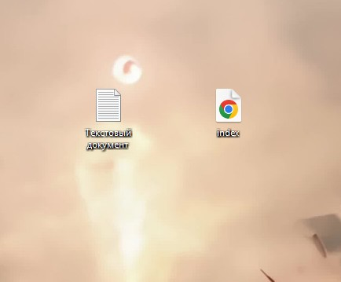
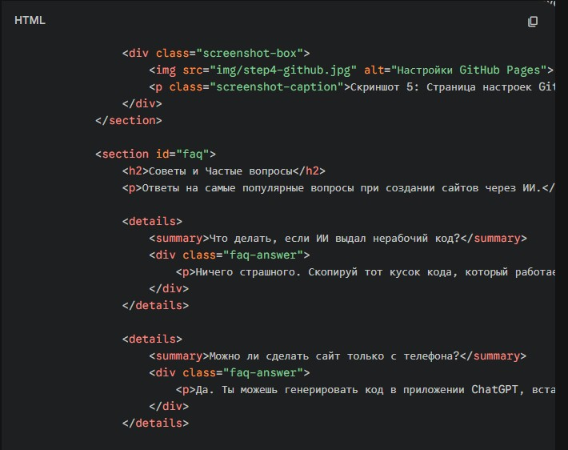
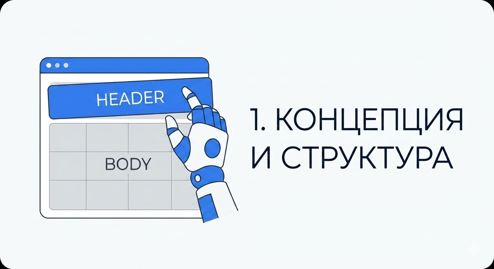
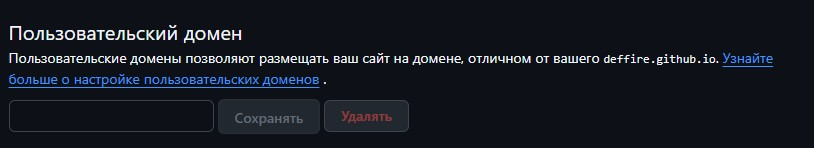
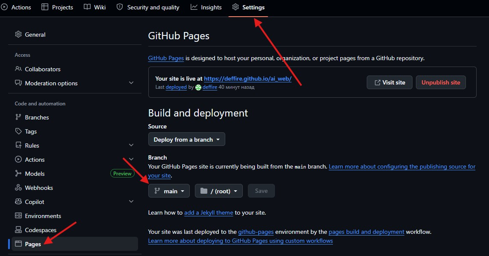

Создай свой сайт с нуля используя Искусственный Интеллект
Подробное руководство по созданию, дизайну, выбору домена и размещению сайта в сети без ручного написания кода.
Шаг 1: Генерация структуры и кода
Современные языковые модели способны писать готовый HTML, CSS и JavaScript код. Главный секрет успеха — правильный Промпт.

Скриншот 1: Создание файла index.html на компьютере (через Блокнот или VS Code)
Как писать запросы (Промпты)
Описывай задачу как четкое техническое задание (ТЗ):
Ты — Senior Frontend Developer. Напиши код одностраничного сайта (HTML + CSS) для портфолио фотографа. Требования: 1. Используй семантические теги HTML5. 2. Цветовая палитра: черно-белая, минимализм. 3. Добавь шапку с навигацией, блок "Обо мне", "Галерея" (сетка CSS Grid) и футер. 4. Сделай сайт адаптивным для мобильных телефонов (@media queries). Код должен быть в одном файле.
You are a Senior Frontend Developer. Write the code for a single-page website (HTML + CSS) for a photographer's portfolio. Requirements: 1. Use semantic HTML5 tags. 2. Color palette: black and white, minimalist. 3. Add a header with navigation, "About Me" section, "Gallery" (CSS Grid), and a footer. 4. Make the site mobile-responsive (@media queries). The code must be in a single file.

Скриншот 2: Как выглядит сгенерированный ИИ код, который нужно скопировать
Итеративный подход
ИИ редко выдает идеальный результат с первого раза. Действуй по шагам:
- Сначала сгенерируй только HTML-каркас.
- Попроси написать CSS стили для этого каркаса.
- Если что-то сломалось, отправь ИИ ошибку с текстом: "Этот блок поехал на телефонах, исправь CSS".
Шаг 2: Контент и визуальные материалы
Сайт не может состоять только из кода. Ему нужны тексты и картинки.
Генерация текста
Указывай нейросети стиль текста: "Напиши приветственный текст для сайта в дружелюбном стиле, без сложных терминов".
Генерация изображений
Для создания графики указывайте параметры стилистики, цвета и соотношение сторон:
Плоская векторная иллюстрация команды, работающей за ноутбуками, современный UI стиль, сине-серая цветовая палитра, белый фон --ar 16:9
Flat vector illustration of a team working on laptops, modern UI style, blue and grey color palette, white background --ar 16:9

Скриншот 3: Пример выдачи картинок в нейросети (например, Midjourney или Шедеврум)
Шаг 3: Что такое домен и регистрация
Домен — это имя вашего сайта в интернете (например, yoursite.com).
DNS-записи (Связь домена и хостинга)
Чтобы домен открывал ваш сайт, нужно зайти в панель управления и прописать А-запись (IP-адрес сервера) или NS-серверы хостинга.

Скриншот 4: Панель управления доменом (как выглядит настройка DNS записей)
Шаг 4: Размещение сайта (Хостинг)
Для простых сайтов (HTML/CSS/JS) идеально подходит бесплатный хостинг на GitHub Pages.
- Создайте репозиторий на GitHub и загрузите `index.html`.
- В настройках (Settings) перейдите в раздел "Pages".
- В качестве источника (Branch) выберите "main" и нажмите Save.

Скриншот 5: Страница настроек GitHub Pages (где нажимать кнопку Save и где появится ссылка)
Советы и Частые вопросы
Ответы на самые популярные вопросы при создании сайтов через ИИ.
Что делать, если ИИ выдал нерабочий код?
Ничего страшного. Скопируй тот кусок кода, который работает криво, отправь его обратно нейросети и напиши: "Этот код не работает, блок съезжает вправо. Исправь ошибку". ИИ сам найдет опечатку и выдаст правильный вариант.
Можно ли сделать сайт только с телефона?
Да. Ты можешь генерировать код в приложении ChatGPT, вставлять его в любой мобильный редактор кода (например, TrebEdit), а загружать файлы на GitHub Pages прямо через браузер телефона (режим версии для ПК).
Обязательно ли покупать платный домен?
Нет. Для школьного проекта или первого портфолио отлично подойдет бесплатная техническая ссылка, которую выдаст хостинг (например, tvoe-imya.github.io).
Как обновить сайт, если я изменил текст?
Просто открой свой файл index.html, измени нужный текст, сохрани, и загрузи этот файл обратно на GitHub (Upload files), заменив старый. Сайт обновится автоматически через 1-2 минуты.